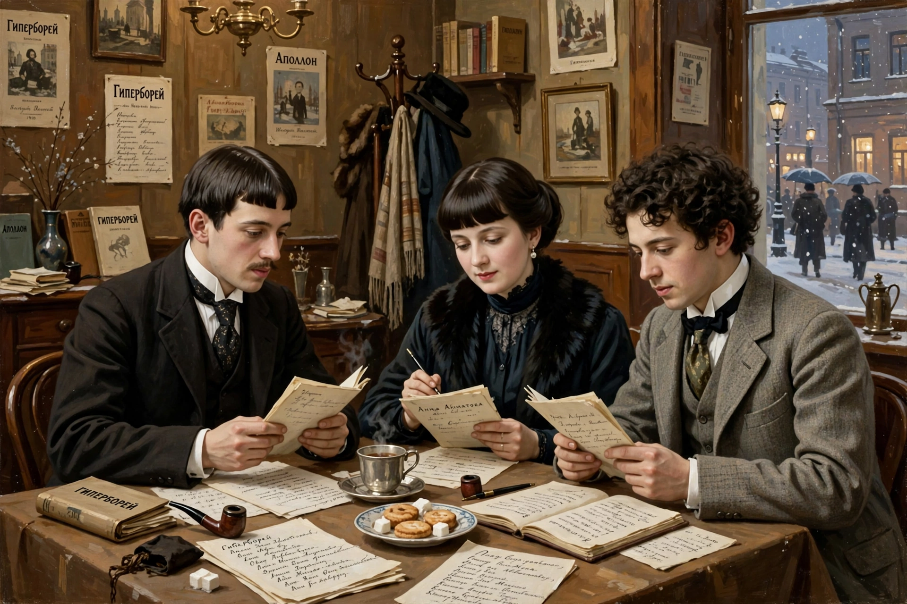

Acmeism

| Country | Russian Empire |
|---|---|
| Years active | c. 1911–1921 |
| Key figures | Nikolay Gumilev, Anna Akhmatova, Osip Mandelstam, Sergey Gorodetsky |
Acmeism (Russian: акмеизм, from Greek akme, "the best age", "prime") was a modernist school of Russian poetry that emerged around 1911 as a reaction against the vagueness and mysticism of Russian Symbolism. The Acmeists demanded clarity, concreteness and craftsmanship — the well-made thing — valuing the physical world, cultural memory and precise language over Symbolist hints of another world.
History
The movement coalesced around the "Poets' Guild" (Tsekh poetov) founded in St Petersburg by Nikolay Gumilev and Sergey Gorodetsky. In 1913 the journal Apollon published manifestos by Gumilev ("The Legacy of Symbolism and Acmeism") and Gorodetsky, while Osip Mandelstam's essay "The Morning of Acmeism", written the same year, became its classic statement. Anna Akhmatova, Gumilev's wife, was the movement's most celebrated lyric poet.
Fate
Acmeism flourished in the last years of the Russian Empire but did not survive the Revolution as an organised movement: Gumilev was executed by the Cheka in 1921, Mandelstam perished in a Gulag transit camp in 1938, and Akhmatova was silenced for decades. Their work, much of it published or circulated clandestinely, is now regarded as the summit of Russia's Silver Age of poetry.